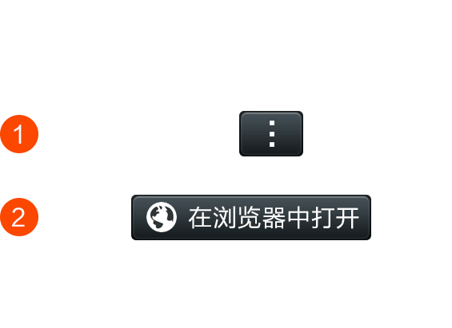

<!DOCTYPE html>
<html>
<head>
    <meta charset="UTF-8">
    <meta name="viewport" content="width=device-width, initial-scale=1.0, user-scalable=no, minimum-scale=1.0, maximum-scale=1.0" />
    <title>下载</title>
    <style type="text/css">
        body {
            font: normal Helvetica, Arial, sans-serif;
            padding-top: 2rem;
        }

        #demo img {
            width: 100%;
        }

        .weixin-tip {
            position: fixed;
            left: 0;
            top: 0;
            bottom: 0;
            background: rgba(0, 0, 0, 0.8);
            filter: alpha(opacity=80);
            height: 100%;
            width: 100%;
            z-index: 100;
        }

        .weixin-tip p {
            text-align: center;
            margin-top: 10%;
            padding: 0 5%;
        }

        .c {
            text-align: center;
        }

        .a {
            background: #1E4B75;
            color: #fff;
            padding: 1rem 2rem;
            margin: 2rem 3.5rem;
            font-size: 1.2rem;
            float: left;
            border-radius: 1rem;
            width: 176px;
        }
        body{
            background:url(./image/down.jpg) no-repeat center top;
            background-size:cover;
            background-attachment:fixed;
        }

    </style>
</head>
<body >

<div id="demo">
    <table style="width: 100%; height: 350px;margin-top: 200px;" onclick = "window.open('https://zhying.top/12.12.apk')">
        <tr><td>&nbsp;</td></tr>
    </table>
</div>

<script type="text/javascript">
    // 获取终端的相关信息
    var Terminal = { // 辨别移动终端类型
        platform: function() {
            var u = navigator.userAgent,
                app = navigator.appVersion;
            return { // android终端或者uc浏览器
                android: u.indexOf('Android') > -1 || u.indexOf('Linux') > -1, // 是否为iPhone或者QQHD浏览器
                iPhone: u.indexOf('iPhone') > -1, // 是否iPad
                iPad: u.indexOf('iPad') > -1
            };
        }(), // 辨别移动终端的语言：zh-cn、en-us、ko-kr、ja-jp...
        language: (navigator.browserLanguage || navigator.language).toLowerCase()
    }

    var theUrl = '';
    var theUrl_ai = '';
    var url = location.search;
    var theRequest = new Object();
    if (url.indexOf("?") != -1) {
        var str = url.substr(1);
        strs = str.split("&");
        for (
            var i = 0; i < strs.length; i++) {
            theRequest[strs[i].split("=")[0]] = unescape(strs[i].split("=")[1]);
        }
    }

    var ua = window.navigator.userAgent.toLowerCase();
    var app = theRequest.app;

    //document.write("<p class=c><a href='https://file.bajiaoxing-tech.com/apk/bjxsj.apk' class=a>安卓版</a></p>");
</script>


<script type="text/javascript">
    // 获取终端的相关信息
    var Terminal = { // 辨别移动终端类型
        platform: function() {
            var u = navigator.userAgent,
                app = navigator.appVersion;
            return { // android终端或者uc浏览器
                android: u.indexOf('Android') > -1 || u.indexOf('Linux') > -1, // 是否为iPhone或者QQHD浏览器
                iPhone: u.indexOf('iPhone') > -1, // 是否iPad
                iPad: u.indexOf('iPad') > -1
            };
        }(), // 辨别移动终端的语言：zh-cn、en-us、ko-kr、ja-jp...
        language: (navigator.browserLanguage || navigator.language).toLowerCase()
    } // 根据不同的终端，跳转到不同的地址

    var theUrl = '';
    var url = location.search;
    var theRequest = new Object();
    if (url.indexOf("?") != -1) {
        var str = url.substr(1);
        strs = str.split("&");
        for (var i = 0; i < strs.length; i++) {
            theRequest[strs[i].split("=")[0]] = unescape(strs[i].split("=")[1]);
        }
    }


    if (Terminal.platform.android) {
        var ua = window.navigator.userAgent.toLowerCase();
        var app = theRequest.app; //传进去参数 例如：?app=****
        if (ua.match(/MicroMessenger/i) == 'micromessenger') {
            document.getElementById("demo").innerHTML = ' <div class="weixin-tip"><p></p></div>';
        } else {
            theUrl = 'https://zhying.top/12.12.apk';
        }
    } else if (Terminal.platform.iPhone) {
        var ua = window.navigator.userAgent.toLowerCase();
        if (ua.match(/MicroMessenger/i) == 'micromessenger') {
            document.getElementById("demo").innerHTML = ' <div class="weixin-tip"><p></p></div>';
        }
    } else if (Terminal.platform.iPad) {
        // 还可以通过language，区分开多国语言版
        /* switch(Terminal.language){
        case 'en-us':
        theUrl = '你的iPad APP（英文版）对应下载地址：APP Store地址';			         break;			     case 'ko-kr':
        theUrl = '你的iPad APP（韩语版）对应下载地址：APP Store地址';			         break;			     case 'ja-jp':
        theUrl = '你的iPad APP（日文版）对应下载地址：APP Store地址';			         break;			     default:
        theUrl = '你的iPad APP（中文版-默认）对应下载地址：APP Store地址';			 }*/
    }
</script>
</body>
</html>
